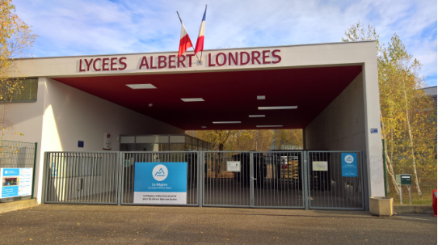
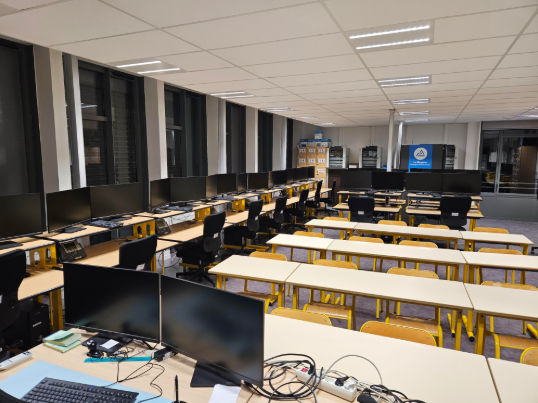
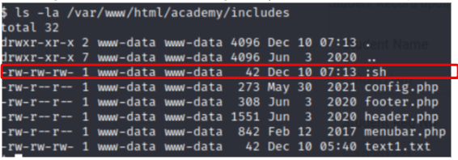
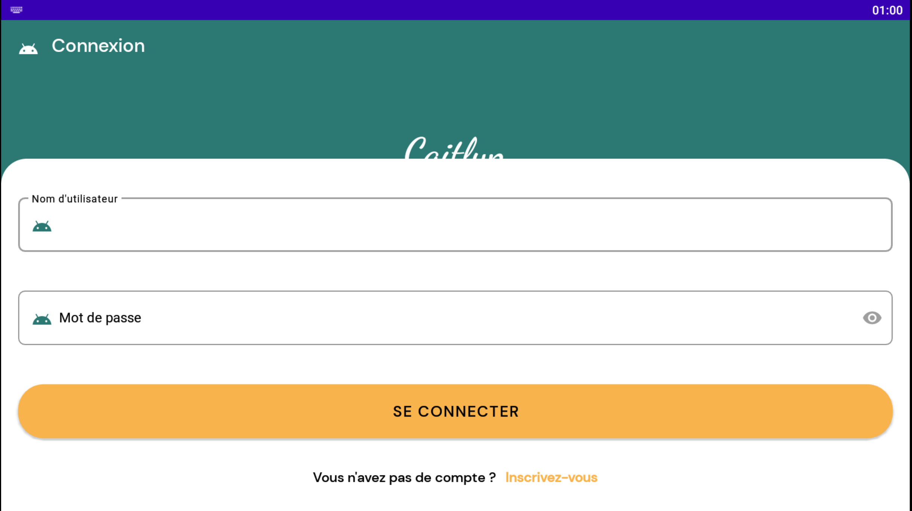
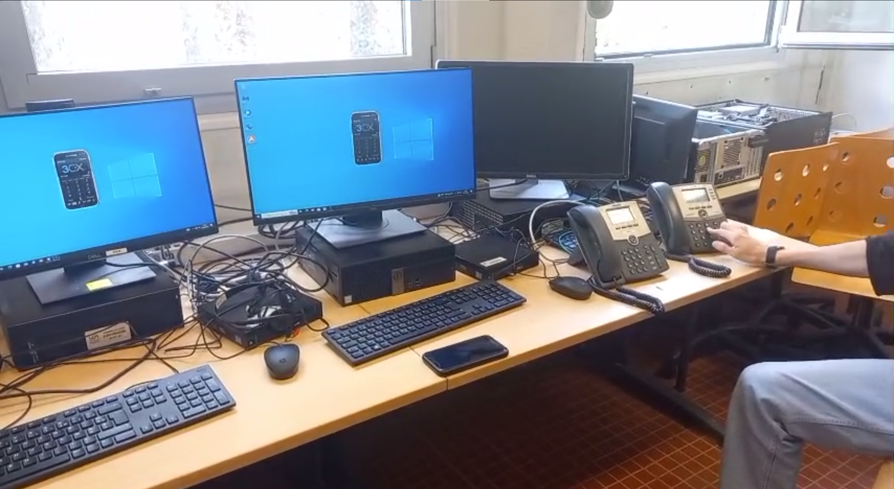

À propos de moi
Je suis actuellement étudiant en BTS Services Informatiques aux Organisations, option SISR, formation orientée vers l’administration des systèmes et des réseaux. Mon intérêt pour l’informatique s’est développé dès le lycée, lorsque j’ai suivi l’option Numérique et Sciences Informatiques (NSI). Cette première approche m’a permis de découvrir les bases de la programmation en Python ainsi que le fonctionnement des réseaux, domaines qui ont rapidement suscité ma curiosité. J’ai choisi de poursuivre dans la voie de l’infrastructure et des systèmes, car j’apprécie particulièrement la rigueur, la logique et l’organisation qu’exige ce domaine. Au fil de mes apprentissages, j’ai pu renforcer ma maîtrise des environnements systèmes, des services réseaux et des principes fondamentaux de la cybersécurité. Créatif, appliqué et déterminé, je m’investis pleinement dans chaque projet qui m’est confié. Les travaux réalisés durant mon parcours, notamment en groupe, m’ont permis de développer un bon esprit d’équipe ainsi qu’une capacité à collaborer efficacement pour atteindre les objectifs fixés. Dans le cadre de ma formation, je suis actuellement à la recherche d’un stage du 18 mai 2026 au 19 juin 2026. Je vous invite à parcourir ce portfolio afin de découvrir plus en détail mon parcours, mes projets ainsi que les compétences techniques que j’ai acquises grâce à ma passion pour l’informatique et les systèmes.
Formation
-
Diplôme :
- Septembre 2025 (en cours) : 1ère année BTS Services informatiques aux Organisations, Lycée Albert Londres Cusset (03), formation sur la conception d'un réseau, sécurité informatique, RGPD, CNIL
- Septembre 2023 : Obtention de la 1ère année BUT Réseaux et Télécommunications, Université Clermont Auvergne (63), formation sur la conception d'un réseau, sécurité informatique ainsi que la télécommunication
- Certification PIX 2022 : Lycée Jean Zay, Thiers (63). Certification obtenue à 280 points sur les bases de l'informatique.
- Baccalauréat Général 2022/2023 : Lycée Jean Zay, Thiers (63). J'ai réussi mon baccalauréat général avec l'option Mathématiques et Numériques, Sciences Informatiques. Cette orientation m'a permis d'explorer le domaine de l'informatique. La spécialité NSI m'a fourni des compétences approfondies en réseaux et en programmation (Python). Grâce à cette formation, j'ai acquis une compréhension approfondie du fonctionnement des réseaux ainsi que la capacité à coder des algorithmes. -
Autre formation :
- Permis B
BTS Services Informatiques aux Organisations (SIO)
Le BTS Services Informatiques aux Organisations (SIO) est une formation en deux ans qui prépare aux métiers de l’informatique en entreprise. Elle permet d’acquérir des compétences solides aussi bien en développement qu’en administration des systèmes et des réseaux.
Option SLAM
L’option SLAM (Solutions Logicielles et Applications Métiers) est orientée vers le développement d’applications. Elle forme à la conception, au développement, au test et à la maintenance de solutions logicielles répondant aux besoins des entreprises.
- Développement d’applications (web, client-serveur)
- Programmation (Java, PHP, SQL, etc.)
- Gestion des bases de données
- Maintenance et évolution des applications
Option SISR (ma spécialité)
L’option SISR (Solutions d’Infrastructure, Systèmes et Réseaux) est orientée vers l’administration des systèmes, des réseaux et la cybersécurité. C’est la spécialité que j’ai choisie et que je souhaite approfondir.
- Installation et administration de serveurs (Linux, Windows)
- Gestion des réseaux (LAN, WAN, routage, VLAN)
- Sécurisation des infrastructures (pare-feu, VPN, sauvegardes)
- Supervision et maintenance des systèmes
Pourquoi ce lycée et ce BTS ?

J’ai choisi le Lycée Albert Londres à Cusset pour sa réputation dans le domaine
de l’informatique et la qualité de son encadrement.
Le BTS SIO m’a attiré car il combine théorie et pratique et permet de développer
des compétences solides dans les deux spécialités SLAM et SISR.
Ma spécialité SISR correspond parfaitement à mon projet professionnel, car
mon objectif à long terme est de devenir administrateur réseau.
Ce métier me permettra de concevoir, sécuriser et maintenir des infrastructures
informatiques fiables au sein des entreprises, un domaine qui m’intéresse
particulièrement et dans lequel je souhaite m’investir pleinement.
Expérience professionnelles
Préparateur de commandes :

Entreprise : L'OUTIL PARFAIT – La Monnerie-le-Montel (63) | 2023, 2024, 2025
Pendant cette mission, ma responsabilité consistait à préparer les commandes de l'entreprise.
Lorsqu'une commande était reçue de la part d'un particulier ou d'un magasin, j'étais chargé
de récupérer les articles nécessaires dans les rayons correspondants.
Cette expérience m'a permis de renforcer ma réactivité en milieu professionnel et
d'améliorer ma collaboration avec les autres membres de mon secteur.
Agriculture :
- Épuration des maïs
- Castration des maïs
Entreprise : EARL PERISSEL – Luzillat (63) | 2020, 2021, 2022
Pendant ces trois années, durant les mois de juillet, j'ai eu l'opportunité de travailler au sein de cette entreprise. J'ai pu réaliser plusieurs tâches, telles que :
Ce travail m'a enseigné l'importance de la responsabilité. En effet, la cohésion de groupe est cruciale, car le retard d'une personne dans le travail peut affecter l'ensemble de l'équipe. J'ai acquis la capacité de travailler en équipe pour assurer la progression efficace du travail et garantir une récolte de qualité pour l'entreprise.
Stage de 3ème :
LIMOS (Laboratoire d'Informatique, de Modélisation et d'Optimisation des Systèmes) – Clermont-Ferrand (63)
Pendant ce stage, j'ai pu découvrir le monde de la programmation aux côtés d'un doctorant en mathématiques spécialisé dans la sécurité plus précisement de WattSap. Au cours de cette expérience, j'ai eu l'opportunité de plonger dans le domaine de l'intelligence artificielle, en découvrant divers algorithmes et leur fonctionnement appliqué à l'IA. De plus, j'ai pu coder un mini-jeu vidéo et tester plusieurs types de code, y compris une reproduction graphique d'une maison.
Mes compétences
Systèmes & Réseaux
- Windows Server
- Linux (Debian, Ubuntu)
- Active Directory
- DHCP et DNS
- Configuration de switchs et routeurs
- Gestion des VLANs et routage réseau
Infrastructure IT
- Virtualisation (VMware ESXi, Hyper-V, Proxmox)
- Supervision réseau avec Nagios
- Conteneurisation et déploiement de services (Docker, Podman)
Cybersécurité
- Sécurité réseau et configuration de pare-feu
- Analyse de vulnérabilités
- Bonnes pratiques de sécurisation des systèmes
Support & Maintenance
- Assistance aux utilisateurs
- Dépannage matériel et logiciel
- Documentation technique
- Gestion des incidents et amélioration continue
Projets scolaires
Recherches métiers / CV / Mail motivé / Entretien
Statut : Terminé
Année : 2025
Description : Découverte des métiers de l’informatique et préparation à l’insertion professionnelle.
Objectifs : Rédiger un CV et un mail professionnels et préparer un entretien.
Tâches réalisées : Recherches métiers, rédaction CV et mail, conseils entretien, diaporama.
Compétences acquises : Communication professionnelle, organisation, présentation orale.
Création d’un site web vitrine
Statut : Terminé
Année : 2025–2026
Description : Conception et développement complet d’un site web vitrine personnel pour présenter mon portfolio.
Objectifs : Appliquer les compétences en HTML, CSS et structuration de contenus web professionnel.
Tâches réalisées : Réalisation du design, intégration des sections, optimisation responsive et liaison CSS.
Compétences acquises : HTML, CSS, organisation de page web, navigation fluide et présentation professionnelle.
Réponse à un appel d’offres de PC

Statut : Terminé
Année : 2025–2026
Description : Réponse à un appel d’offres pour la fourniture de PC adaptés aux besoins d’un service informatique.
Objectifs : Étudier les besoins, sélectionner les composants et proposer une solution argumentée.
Tâches réalisées : Comparatif de matériel, réalisation de devis et documentation technique.
Compétences acquises : Recherche, analyse de besoins, création de devis, argumentation technique.
Appel d’offres et câblage
Statut : Terminé
Année : 2025
Description : Réponse à un appel d'offres pour le câblage d’une salle de classe reconvertie en salle informatique.
Objectifs : Proposer une solution technique adaptée répondant aux exigences de l’appel d’offres.
Tâches réalisées : Analyse du cahier des charges, sélection des solutions, rédaction de la proposition technique, présentation de la solution.
Compétences acquises : Analyse de besoins, rédaction technique, câblage réseau.
Mise en place d’un environnement de réseau
Statut : Terminé
Année : 2025–2026
Description : Mise en place d'un environnement réseau pour simuler différents scénarios.
Objectifs : Créer des environnements de test et de production.
Tâches réalisées : Configuration des équipements, VLAN, routage et tests de connectivité.
Compétences acquises : Réseaux LAN, VLAN, routage, administration réseau.
Réseau poste à poste & gestion Windows 10
Statut : Terminé
Année : 2025–2026
Description : Mise en place d’un réseau poste à poste avec gestion des utilisateurs et des permissions sous Windows 10.
Objectifs : Maîtriser l’administration d’un réseau P2P et documenter les procédures.
Tâches réalisées : Configuration SAM, gestion des partages, permissions NTFS, création de tutoriel.
Compétences acquises : Windows 10, réseau P2P, gestion des droits, documentation.
YUMI – Clé bootable multifonction
Statut : En cours
Année : 2026
Description : Création d’une clé USB bootable multifonction avec documentation et comparatif d’outils.
Objectifs : Créer une clé bootable avec YUMI et comparer les outils associés.
Tâches réalisées : Analyse des besoins, tutoriels, comparatif logiciels, création de la clé, tests.
Compétences acquises : YUMI, gestion de projet, documentation technique.
Projets techniques et personnels (IUT)

Découvrir le pentesting
Objectif : Le but de ce projet était de pentester des machines pour avoir les droits sur celle-ci
Ma mission : Pour ce projet, nous étions en groupes de deux. Je devais prendre le contrôle de cinq machines différentes, chacune ayant un niveau de difficulté distinct. Tout d'abord, j'essaie de déterminer à quoi j'ai accès et ce qui est disponible sur la machine que je souhaite pentester. Une fois cela fait, j'utilise différentes méthodes pour l'escalade de privilèges (c'est-à-dire obtenir des droits d'administrateur sur la machine afin d'y avoir un accès complet), comme l'outil Metasploit, qui permet d'organiser des attaques, ou en examinant les versions du système d'exploitation de la machine. J'ai également utilisé Nmap, en entrant l'adresse IP de la machine, pour identifier tous les ports ouverts et ainsi tester si j'ai accès à la machine ou à un site web hébergé sur le port 80. Grâce à cela, je peux utiliser les informations disponibles sur le site web (si j'y ai accès), comme trouver des comptes existants sur la machine, ce qui me permet ensuite de m'y connecter ou de lancer une attaque.
Résultats : Prise en main de différentes méthodes d’attaque, récupération de machines et développement de compétences en sécurité.

Développer des applications communicantes
Objectif : Savoir concevoir et utiliser une application servant de fil d'actualité
Ma mission : Pour ce projet, nous étions par groupes de deux. Tout d'abord, je devais spécifier les besoins fonctionnels et non fonctionnels. Ensuite, je devais rédiger un cahier des charges et enfin gérer l'application.
J'ai configuré une page d'accueil servant à la connexion, avec un champ pour le nom d'utilisateur et un mot de passe. Un bouton reliait cette page à une autre page permettant la création d'un compte, incluant un nom d'utilisateur, un mot de passe et un email.
Une fois cela fait, j'ai créé une nouvelle page affichant des messages enregistrés au préalable. J'ai donc dû coder en Java une fonctionnalité permettant d'écrire un message, de le "liker" et d'afficher l'heure à laquelle il a été envoyé.
Enfin, j'ai mis en place une base de données pour enregistrer correctement les comptes créés et, surtout, pour compter le nombre de "likes" d'un message. Cela permettait de classer les messages dans le fil d'actualité en fonction du nombre de "likes" et de l'heure d'envoi.
Résultats :
Application finit et fonctionnel mais il manquait la partie graphique de la page d'acceuil après la connexion.

Projet Intégratif
Objectif : Savoir configurer un réseau avec différents services
Ma mission : Pour ce projet, nous étions en groupe de 5 personnes. Nous devions créer un réseau d'entreprise fiable et au minimum sécurisé. Nous avons réparti les tâches, et je me suis occupé du serveur proxy, du VPN ainsi que d'un call serveur. J'ai configuré un IPBX pour les différents postes au sein de l'entreprise afin qu'ils puissent communiquer entre eux. J'ai donc configuré une extension PJSIP sur l'interface web de l'IPBX, permettant à chaque téléphone de communiquer. J'ai renseigné les numéros de téléphone de l'entreprise ainsi que les noms souhaités. Pour son bon fonctionnement, j'ai dû désactiver le pare-feu de l'IPBX.
J'ai également configuré un VPN permettant aux ordinateurs personnels de se connecter au réseau de l'entreprise et d'accéder au serveur LINUX en SSH. Ce VPN a été configuré via le terminal du serveur Linux. Sur les machines souhaitant utiliser le VPN, j'ai installé un logiciel nommé OpenVPN permettant de se connecter au VPN. Enfin, j'ai configuré un serveur proxy. Ce dernier bloquait l'accès à toutes les pages internet sur les ordinateurs de l'entreprise, contribuant ainsi à la sécurité du réseau. Pour que le personnel puisse travailler, j'ai autorisé, lors de la configuration du proxy, l'accès aux sites internet auxquels le personnel avait droit.
Résultats :
Ce projet m'a apporté des approfondie mes connaissances en réseaux ainsi qu'en téléphonie. En effet je peux maintenant configurer un IPBX me permettant de faire un serveur téléphonique fonctionnel et fiable. Je peux aussi configurer un réseaux stable ainsi que différent services réseaux tel que le DHCP ou bien encore le DNS. Ce projet ma donc permis de développer ma cohesion d'equipe ainsi que mon entrain dans les taches a réaliser.
Divers
Passion :

Rallye
Depuis plusieurs années, ma passion pour le rallye est grandissante. Chaque année, je me rends à la finale des rallyes de France, située aux environs de Lyon. Fort de cet engouement, mon ambition est désormais de concrétiser cette passion en m'engageant activement dans le monde du rallye.

Musculation
J'aime faire de la musculation, c'est un de mes plus gros passe-temps qui me permet de me détendre et de chasser le stress. Ça fait plus d'un an que j'en fais deux fois par semaine, et j'y vais avec un ami qui m'aide à rester concentré pendant la séance.
Animé
J'apprécie énormément visionner des animés. Cela me permet de plonger dans de nouveaux mondes en m'immergeant dans la peau du personnage principal de l'histoire, me donnant ainsi l'opportunité de comprendre son histoire et son passé. J'ai une préférence particulière pour les animés de romance tels que "White Album 2", "Charlotte" et "Toradora!".
CV
Contact
- Téléphone: +33 7 72 28 37 92
- LinkedIn: Mon profil
- Email: ranc.maxence@gmail.com